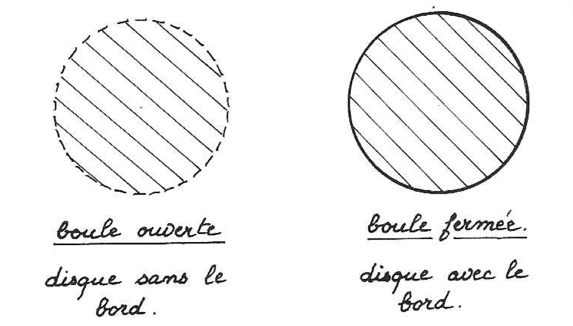
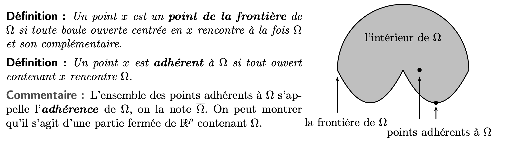

Topologie
Espace métriques
Distance, Diamètre, Norme
Espace Métrique
- Un espace métrique noté \((E,d)\) est un ensemble \(E\) muni d'une distance \(d\) (on va le définir !)
Distance
-
Soit \(E\) un ensemble non vide, on dit qu'une application \(d\) définit une distance sur \(E\), si \(d\) vérfie
-
définie positive :
-
symétrie :
-
inégalité triangulaire :
Preuve : \(d(x,y) \le d(z,y) ,\; d(y,z) \le d(y,x) + d(x, z)\)
-
-
Soit \((E,d)\), et \(A \subset E\) une partie non vide. Alors, \((A, d|_{A\times A})\) est un espace métrique. On dit \(d|_{A\times A}\) la distance sur \(A\) est induite par la distance sur \(E\).
-
On définit la distance produit de \((d_1, \ldots, d_n)\) :
Diamètre
- On appelle diamètre de \(A\) pour \((E,d)\) et \(A\) est une partie non vide de \(E\) :
Norme
-
Soit \(E\) un \(\mathbb K\)-espace vectoriel, on dit que l'application \(N\) définit une norme sur \(E\), si elle vérifie :
-
définie positive :
-
homogénéité :
- Inégalité triangulaire :
-
-
Soit \((E,N)\) et \(F\) un s-ev de \(E\), Alors \((F, N|_F)\) est un espace vectoriel normé. On dit que la norme sur \(F\) induite par la norme sur \(E\).
-
Si \((E,N)\) est un espace vectoriel normé, alors l'application définie par : définit une distance de \(E\), cette distance est appelée sous-jacente à la norme.
-
Exemples des normes :
Boules

On soit \((E,d)\) un espace métrique.
Boule Fermée
- Soit \(a ∈ E\) et \(r ∈ R_+\). On appelle boule fermée de centre \(a\) et de rayon \(r\) l’ensemble
Boule Ouverte
- On appelle boule ouverte de centre \(a\) et de rayon \(r\) l’ensemble
Sphère
- On appelle sphère de centre \(a\) et de rayon \(r\) l’ensemble
Boule ou Sphère Unité
- On parle de boule (ou de sphère) unité si \(r=1\).
Parties
Soit \((E,d)\) un espace métrique, Soit \(A\) une partie de \((E,d)\).
Partie bornée
-
\(A\) est partie bornée si
-
C'est équivalent de dire que :
- \(\forall x\in E, \exists r \in \mathbb R_+^*,\; A \subset BO(x,r)\)
- \(\mathrm{diam}(A) < + \infty\)
Preuve : (\(1\to 3\)) \(d(x,y) \le d(x, x_0)+d(x_0,y) \le 2r\)
Suite convergente
- Soit \((x_n)\) une suite d'éléments de \(E\), \(\lambda \in E\). On dit que la suite converge vers \(\lambda\) si
- \(\lambda\) est appelée limite de la suite.
- On note :
Partie fermée
-
- Ainsi, si, et seulement si
Soit \(F\subset E\). On dit \(F\) est fermé dans \(E\) si
Preuve : Soit \(x\in E\), \(d(x,F) = 0\), donc \(\exists(x_n)\in F^\mathbb N\), \(d(x_n,x) \underset{n \to +\infty}{\longrightarrow}d(x,F) = 0\), donc \(x_n \underset{n\to +\infty}{\longrightarrow} x\). Sachant que \(F\) est fermé, \(x\in F\).
-
Exemples :
- Intervalles fermés
- Boules fermés
-
Remarque : \(E\) est important pour dire \(F\) est fermé ou non.
- Exemple : \(]0,1]\) non fermé dans \(\mathbb R\) car le contre-exemple \(x_n = \frac{1}{n}\), mais fermé dans \(]0, +\infty[\).
-
Propriétés :
- \((F_i)\) une famille q.q. de fermés de \(E\), alors \(\bigcap F_i\) est fermée dans \(E\)
-
\((F_i)\) une famille finie de fermés de \(E\), alors \(\bigcup F_i\) est fermée dans \(E\)
- Contre-exemple : \(F_i = [-1+ 1/i, 1-1/i]\)
Preuve : Considérons une suite \((x_n)\) et une famille \(F_j\) contient une infini nombre des termes de \((x_n)\). On construit une fonction \(\varphi\) et ensuite fabriquer une sous-suite qui concentre sur \(F_j\), il contient sûrment une infinité d'éléments.
-
Montrer qu'une partie est fermée : Soit \(X\) une partie de \(E\). Voici les methodes classiques pour montrer que \(X\) est un ferme.
- On utilise la caracterisation sequentielle. Precisement, pour montrer que \(X\) est fermé, il suffit de montrer que toute suite \((x_n)\) d’ ́elements de \(X\) qui converge (donc qui a une limite \(l ∈ E\)) a sa limite dans \(X\).
- Intersection q.q. de parties fermées ou une union finie de fermés.
- L'image réciproque d'un fermé par une application continue.
- Montrer que son complémentaire est ouvert.
Adhérence
- Soit \(A \subset E\), on appelle adhérence de \(A\) dans \(E\) le plus petit fermé de \(E\) contenant \(A\), et on le note \(\bar A\).
-
L'ensemble \(\overline{A}\) est l'ensemble des limites des suites d'éléments de \(A\).
-
L'adhérence dépend de la distance et de l'ensemble \(E\).
-
Propriétés : adhérence et boule
Preuve : Constuire \(a_n \in A \cap BO(x, 1/n)\)
-
L'ensemble \(\bar A\) est donc l'ensemble des limites des suites d'éléments de \(A\). Il dépend de \(E\) et \(d\).
-
Propriétés :
- \(A \subset \bar{A}\)
- \(\overline{\overline{A}} = \bar{A}\)
- \(A = \bar{A} \iff A\) est fermé.
- \(A \subset B \implies \bar A \subset \bar B\)
- \(\overline{A \cup B} = \bar{A} \cup \bar{B}\)
- \(\overline{A \cap B} \subset \bar{A} \cap \bar{B}\)
-
Adhérence d'une boule ouverte : Soit \((E,d)\) un espace métrique, alors :
- L'égalité n'est pas vérifiée en général. L'égalité est pris lorsque \((E, N)\) est un espace normée.
Preuve : \((\implies)\), \(BF\) est un boule fermé. \((\impliedby)\), \(x \in BF(a,r)\), alors la suite \(x_n = \lambda a+(1-\lambda)x\) suffit, ici \(\lambda = 1/n \in ]0, 1[\). Il faut vérifier que, par homogénéité de norme, \(| | x_n - a| | = ( 1-\lambda)| | x - a | | <r\) et \(x_n \to x\).
Partie Dense
-
Partie Dense: Soit \((E,d)\) un espace métrique et \(A\) une partie de \(E\). \(A\) est dense dans \(E\) si \(\overline{A}=E\).
-
Exemple : \(\mathbb Q\) dans \(\mathbb R\).
Preuve : \(x\in \mathbb R\), on peut trouver \(x + \sqrt{2}/n \underset{n \to \infty}{\longrightarrow}x\). Donc, \(x\in \overline{\mathbb Q}\).
Partie Ouverte
-
Parties Ouvertes : Soit \(O \subset (E,d)\), on dit que \(O\) est ouvert dans \(E\) si \(E\backslash O\) est fermé dans \(E\).
- Remarque : C'est FAUX de dire que \(A\) est ouvert dans \(E\) car \(A\) n'est pas fermé. (Exemple : Dans \((\mathbb R, |.|)\), \(]0,1]\) n'est ni fermé ni ouvert)
- Caractérisation des ouverts :
Preuve : [TBD, pas difficle]
-
Propriétés :
- \(\bigcup_{i\in I} O_i\) est ouvert.
- Si \(I\) est fini, alors \(\bigcap_{i\in I}O_i\) est ouvert.
-
Montrer qu'une partie est ouverte : Soit \(X\) une partie de \(E\). Voici les méthodes classiques pour montrer que \(X\) est un ouvert.
- On revient à la definition. Une partie \(X\) de $E est ouverte si et seulement si pour tout élement \(x\) de \(X\), il existe un reel \(δ > 0\) tel que \(BO(x,δ) ⊂ X\).
- Réunion q.q. de parties ouvertes ou intersection finie d'ouverts.
- Réciproque d'un ouvert par une application continue.
- Son complémentaire est fermé.

Intérieur
-
Intérieur d'un ensemble : On appelle intérieur de \(A\) le plus grand ouvert de \(E\) contenu dans \(A\). On le note Un point de l'intérfieur de \(A\) est dit intérieur à \(A\).
-
Caractérisation de l'intérieur d'unsemble :
-
Remarque :
- L'égalité n'est pas toujours vérifée.
- Dans les espaces vectoriels normés, il y a toujours égalité .
-
Propriétés :
- Exemple :
- Dans \(\mathbb{R}\) muni de la distance \(| |\), on a $\mathring A $
Frontière
On appelle frontière de \(A\) dans \(E\) l'ensemble - La frontière de \(A\) est aussi celle de \(E \backslash A\). - La frontière d'un ensemble est fermé.
Isolé
Soit \(A\) une partie q.q. de \((E.d)\). Les points isolés de \(A\) :
Accumulation
- Les points d'accumulation de \(A\) sont tels que
Voisinage
- Voisinage de \(a\) dans \(E\) : On dit que \(V\) est un voisinage de \(a\) dans \(E\) si :
Suites et fonctions continues
Extraction d'une suite
Soit \((u_n)\) une suite de \(E^\mathbb{N}\). On dit que \(\varphi\) est une extraction et que la suite \((u_{\varphi(n)})\) est extraite de \((u_n)\).
Valeur d'adhérence
On dit que \(\alpha \in E\) est une valeur d'adhérence de \((u_n)\) s'il existe une suite extraite de \((u_n)\) qui converge vers \(\alpha\). On le note :
- Exemple :
- \((-1)^n\) a pour valeurs d'adhérence \(-1\) et \(1\).
- Une suite convergente a pour seule valeur d'adhérence sa limite.
- \(\tan(h)\) a pour valeur d'adhérence \(\mathbb{R}\).
-
Propriété : Soit \(u, \; a\in E\), alors :
-
Propriété : \(\forall u \in E\), \(\mathrm{Adh} (u)\) est fermé dans \(E\).